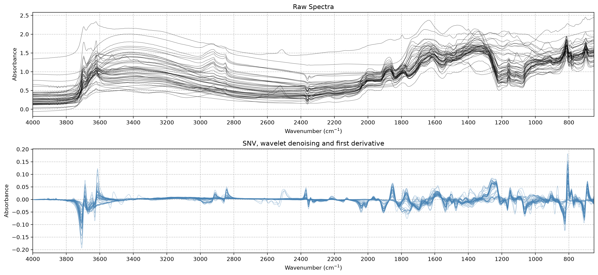

from soilspectfm.all import *
from sklearn.pipeline import PipelineSoilSpecTfm
Scikit-learn transformers for preprocessing soil infrared spectra
SoilSpecTfm corrects, smooths and resamples soil infrared spectra before modeling. It covers scatter correction, Savitzky-Golay smoothing and derivatives, wavelet denoising, conversion to absorbance, resampling and trimming. Each transformer follows the scikit-learn API. You can chain them in a Pipeline, tune their parameters with GridSearchCV, and put them in front of any scikit-learn model.
SoilSpecData loads the Open Soil Spectral Library (OSSL) as spectra and soil properties ready for these transformers. The SoilSpecTfm documentation covers the full API.
Installation
pip install -U soilspectfmTo install the development version, with nbdev and SoilSpecData, run this in the project root with uv:
uv sync --extra devFeatures
| Transformer | What it does |
|---|---|
SNV |
Centers and scales each spectrum (standard normal variate) |
MSC |
Corrects each spectrum against a reference spectrum (multiplicative scatter correction) |
SavitzkyGolay |
Smooths each spectrum, or takes its derivative |
WaveletDenoise |
Removes noise by thresholding wavelet coefficients |
ToAbsorbance |
Converts reflectance to absorbance |
Resample |
Interpolates spectra onto new wavenumbers |
Trim |
Keeps the wavenumbers inside a range |
soilspectfm.datasets loads the two toy datasets, and soilspectfm.visualization plots spectra.
Quick start
from soilspectfm.all import * imports every transformer, the toy dataset loaders and the plotting functions. Load the toy MIR spectra that ship with the package. Spectrum edges are often noisy, and one toy spectrum has a faulty first point, so Trim keeps the wavenumbers from 650 cm⁻¹. Then preprocess the spectra with standard normal variate (SNV), wavelet denoising and a first derivative:
X, ws = load_toy_mir()
trim = Trim(ws, w_min=650)
X, ws = trim.fit_transform(X), trim.get_wavenumbers()
pipe = Pipeline([
('snv', SNV()),
('denoise', WaveletDenoise()),
('deriv', SavitzkyGolay(window_length=11, polyorder=2, deriv=1))])
X_tfm = pipe.fit_transform(X)
X_tfm.shape(50, 1676)Compare the raw and preprocessed spectra:
plot_spectra_comparison(
X, X_tfm, ws,
transformed_title='SNV, wavelet denoising and first derivative');
Modeling OSSL data
SoilSpecData gives the spectra X and soil properties y of the OSSL samples. This example predicts cation exchange capacity (CEC) from MIR spectra with partial least squares regression, and scores it with 5-fold cross-validation. The first call to load_ossl downloads about 1 GB:
from soilspecdata.all import *
from sklearn.cross_decomposition import PLSRegression
from sklearn.model_selection import cross_val_scoreX, y, ids = load_ossl().mir().xy('cec_usda.a723_cmolc.kg')
model = Pipeline([
('snv', SNV()),
('deriv', SavitzkyGolay(window_length=11, polyorder=2, deriv=1)),
('pls', PLSRegression(n_components=10))])
cross_val_score(model, X, y, cv=5, scoring='r2')Upgrading from 0.0.x
Version 0.1.0 changes the API of soilspectfm. To update code written for version 0.0.x:
soilspectfm.coreis nowsoilspectfm.preprocessing. To import every transformer, loader and plotting function at once, usefrom soilspectfm.all import *.SavitzkyGolayreplacesTakeDerivativeandSavGolSmooth. Its defaults arewindow_length=15,polyorder=3andderiv=0, the oldSavGolSmoothdefaults. ReplaceSavGolSmooth(...)withSavitzkyGolay(...). ReplaceTakeDerivative()withSavitzkyGolay(window_length=11, polyorder=1, deriv=1), because the defaults differ.MSCno longer acceptsn_jobs.Resample.fitraises aValueErrorwhentarget_xgoes outside the range ofsource_x.Resample.transformnow requiresfitfirst.soilspectfm.utilsis nowsoilspectfm.datasets. It no longer exportstoy_mir_urlandtoy_noisy_mir_url. The toy datasets ship with the package, andload_toy_mirandload_toy_noisy_mirread them without a network connection.
Contributing
Contributions are welcome. SoilSpecTfm is built with nbdev: the notebooks in nbs/ are the source of the code, the documentation and the tests. After changing a notebook, export the code, run the tests, clean the notebooks and rebuild the README with:
uv run nbdev-prepareReport bugs and ask questions in GitHub issues.
License
SoilSpecTfm is under the Apache 2.0 licence.